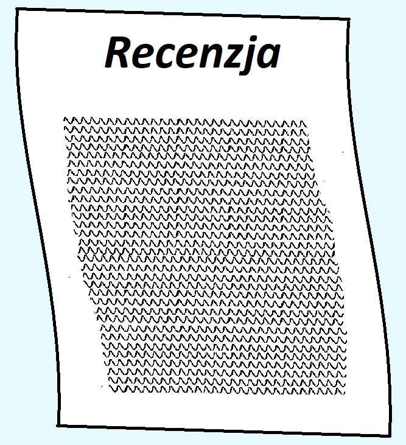

Recenzja

Co to jest 5G?
5G to skrót od technologii „piątej generacji” dla sieci komórkowych, będącej ewolucją obecnego szeroko rozpowszechnionego standardu 4G LTE. Wdrażanie 5G rozpoczęto na całym świecie w 2019 roku.
Jak działa Internet mobilny? Jak działa 5G?
5G wykorzystują system witryn komórkowych, które dzielą swoje terytorium na sektory i wysyłają zakodowane dane za pomocą fal radiowych. 5G używa interfejsu radiowego NR – New Radio.
Jaka jest różnica między 5G a 4G?
4G osiąga teoretycznie 100 megabitów na sekundę (Mb / s), natomiast 4G LTE-Advanced osiąga 1 Gb/s, zaś 5G osiąga maksymalną prędkość aż 10 gigabitów na sekundę. 5G wykorzystuje również 3 klasy ruchu.
Jak przebiega wdrażanie 5G?
Wdrażanie 5G rozpoczęło się już w 2019 roku i ciągle trwa. Rok temu sieć T-mobile chwaliła się 160 stacjami bazowymi 5G. Aktualnie stacje bazowe 5G znajdują się w większości większych miast w Polsce.
Jaki wpływ na środowisko ma 5G?
Wpływ sieci 5G na środowisko jest niewielki. Sieć 5G wymaga większego zagęszczenia stacji bazowych niż 4G, więc 5G będzie miało taki wpływ na środowisko, jaki będą na nie miały stacje bazowe.
Jakie będą koszty wdrażania 5g, kto za to zapłaci?
Aktualnie stacje bazowe 5G powstają dzięki firmom telekomunikacyjnym, z ich pieniędzy. Jednak te firmy nie robią tego charytatywnie, tylko w przyszłości na możliwość zysku na 5G. W związku z tym bezpośrednio płacą firmy telekomunikacyjne, a pośrednio wszyscy ich klienci.
Co po 5G?
Już teraz planuje się sieć 6G. Plany te są w bardzo wczesnej fazie, jednak już teraz zakłada się, że 6G będzie osiągać transfer do 1 Tb/s, będzie miało opóźnienie na poziomie 0,1ms. Dodatkowo zakłada się wysoką efektywność energetyczną na poziomie 1 Tb/J.